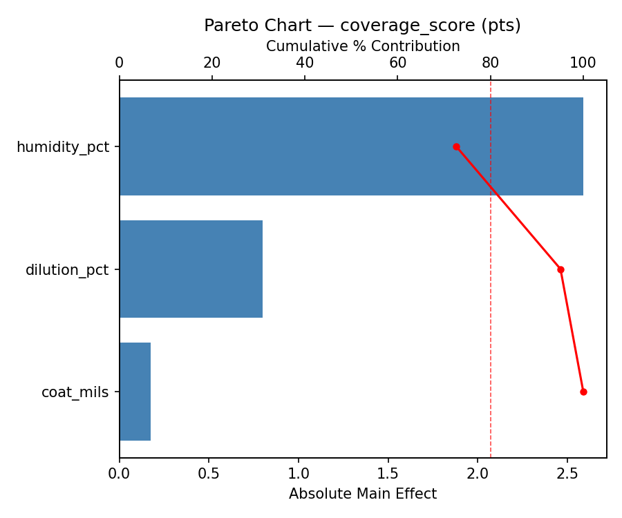
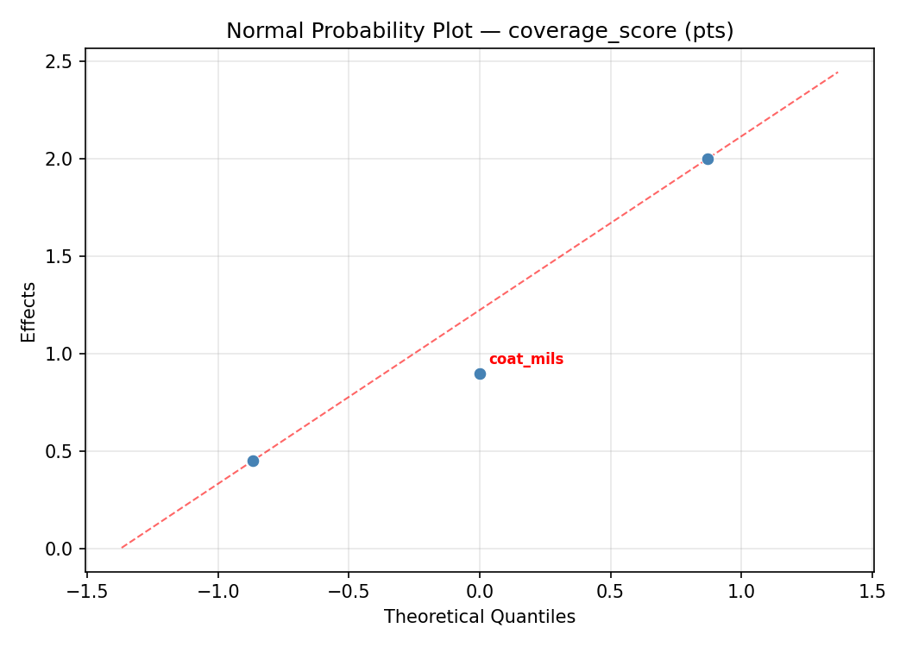
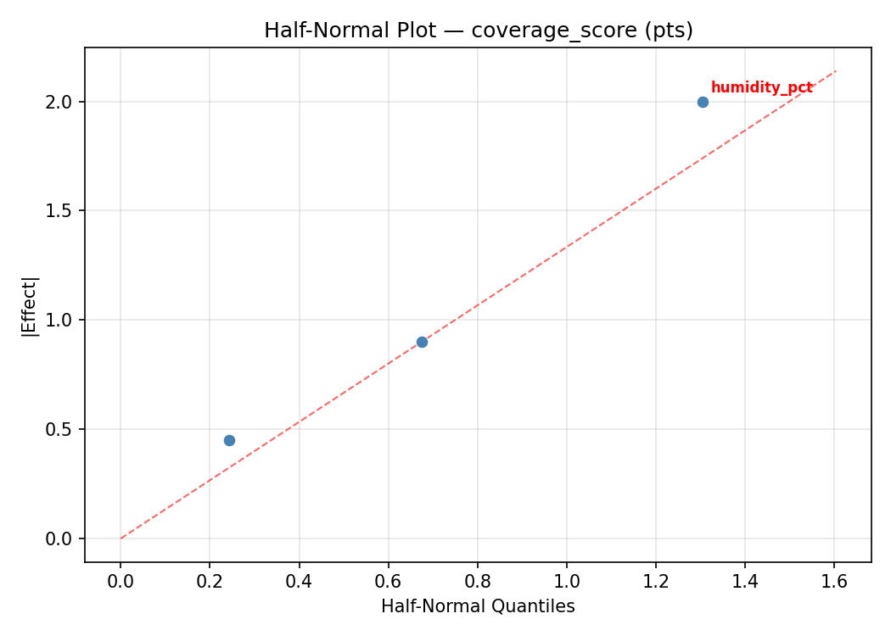
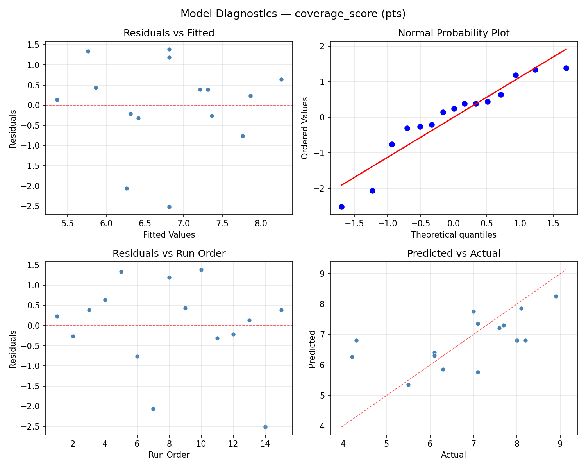
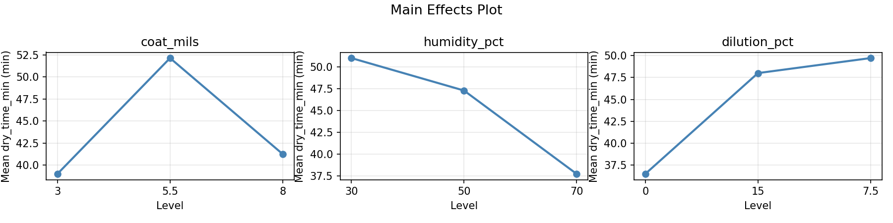
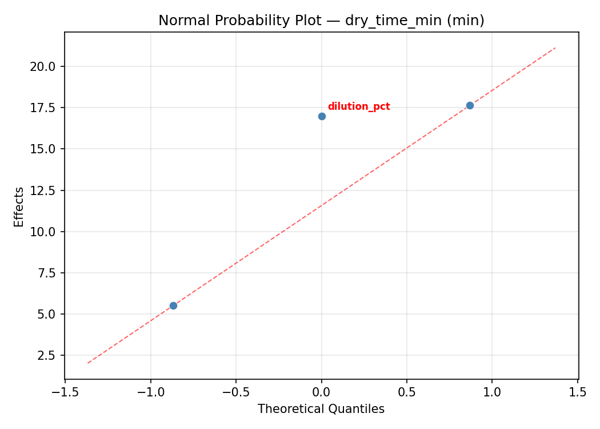
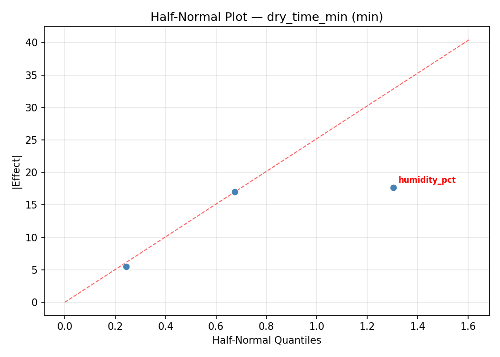
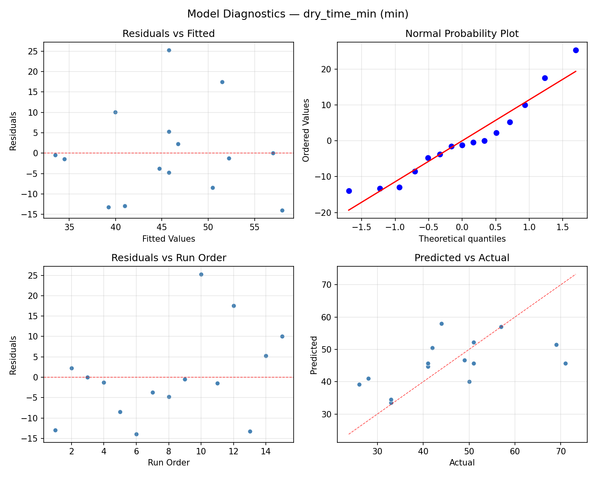
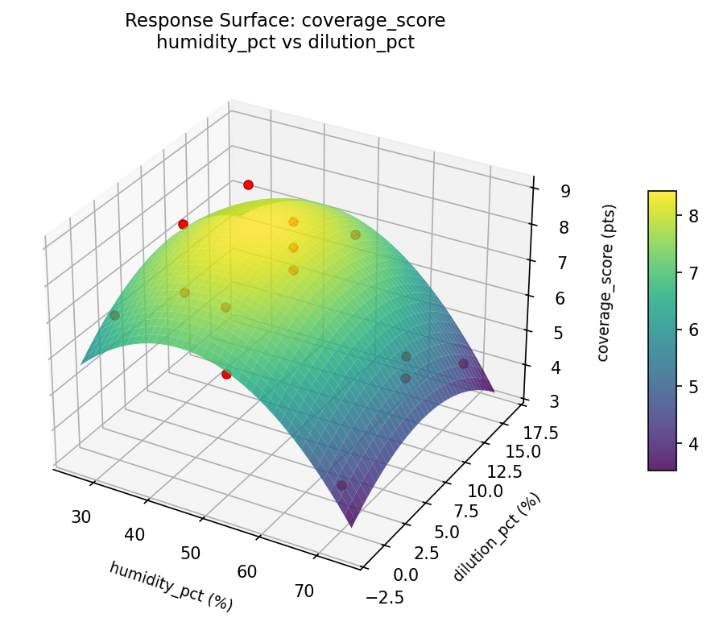
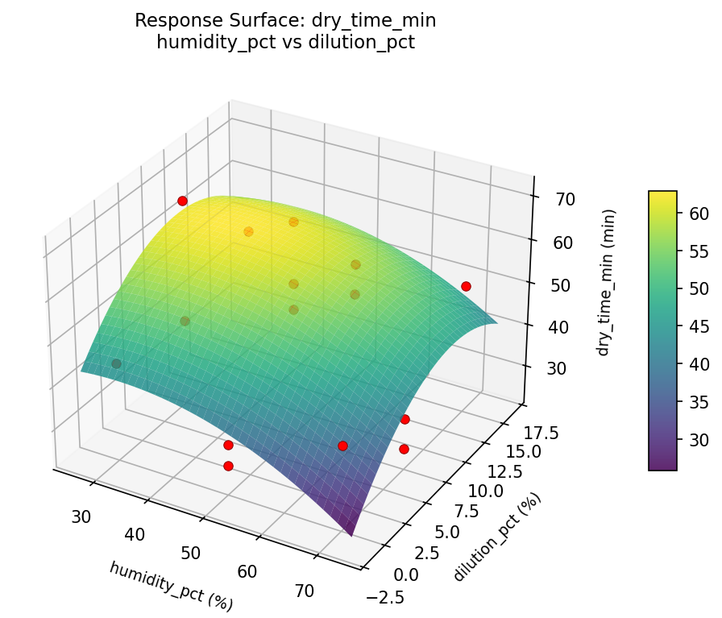

Summary
This experiment investigates interior paint finish quality. Box-Behnken design to maximize coverage and minimize drying time by tuning coat thickness, humidity, and paint dilution ratio.
The design varies 3 factors: coat mils (mils), ranging from 3 to 8, humidity pct (%), ranging from 30 to 70, and dilution pct (%), ranging from 0 to 15. The goal is to optimize 2 responses: coverage score (pts) (maximize) and dry time min (min) (minimize). Fixed conditions held constant across all runs include paint type = latex_eggshell, surface = drywall.
A Box-Behnken design was chosen because it efficiently fits quadratic models with 3 continuous factors while avoiding extreme corner combinations — requiring only 15 runs instead of the 8 needed for a full factorial at two levels.
Quadratic response surface models were fitted to capture potential curvature and factor interactions. The RSM contour plots below visualize how pairs of factors jointly affect each response.
Key Findings
For coverage score, the most influential factors were dilution pct (56.4%), coat mils (38.6%), humidity pct (5.0%). The best observed value was 8.9 (at coat mils = 5.5, humidity pct = 70, dilution pct = 0).
For dry time min, the most influential factors were coat mils (41.1%), dilution pct (40.7%), humidity pct (18.2%). The best observed value was 26.0 (at coat mils = 5.5, humidity pct = 50, dilution pct = 7.5).
Recommended Next Steps
- Run confirmation experiments at the predicted optimal settings to validate the model.
- Consider whether any fixed factors should be varied in a future study.
Experimental Setup
Factors
| Factor | Low | High | Unit |
|---|
coat_mils | 3 | 8 | mils |
humidity_pct | 30 | 70 | % |
dilution_pct | 0 | 15 | % |
Fixed: paint_type = latex_eggshell, surface = drywall
Responses
| Response | Direction | Unit |
|---|
coverage_score | ↑ maximize | pts |
dry_time_min | ↓ minimize | min |
Configuration
{
"metadata": {
"name": "Interior Paint Finish Quality",
"description": "Box-Behnken design to maximize coverage and minimize drying time by tuning coat thickness, humidity, and paint dilution ratio"
},
"factors": [
{
"name": "coat_mils",
"levels": [
"3",
"8"
],
"type": "continuous",
"unit": "mils"
},
{
"name": "humidity_pct",
"levels": [
"30",
"70"
],
"type": "continuous",
"unit": "%"
},
{
"name": "dilution_pct",
"levels": [
"0",
"15"
],
"type": "continuous",
"unit": "%"
}
],
"fixed_factors": {
"paint_type": "latex_eggshell",
"surface": "drywall"
},
"responses": [
{
"name": "coverage_score",
"optimize": "maximize",
"unit": "pts"
},
{
"name": "dry_time_min",
"optimize": "minimize",
"unit": "min"
}
],
"settings": {
"operation": "box_behnken",
"test_script": "use_cases/137_paint_finish_quality/sim.sh"
}
}
Experimental Matrix
The Box-Behnken Design produces 15 runs. Each row is one experiment with specific factor settings.
| Run | coat_mils | humidity_pct | dilution_pct |
|---|
| 1 | 5.5 | 30 | 0 |
| 2 | 5.5 | 50 | 7.5 |
| 3 | 8 | 50 | 15 |
| 4 | 8 | 50 | 0 |
| 5 | 5.5 | 50 | 7.5 |
| 6 | 5.5 | 50 | 7.5 |
| 7 | 3 | 50 | 15 |
| 8 | 8 | 30 | 7.5 |
| 9 | 5.5 | 30 | 15 |
| 10 | 8 | 70 | 7.5 |
| 11 | 3 | 50 | 0 |
| 12 | 5.5 | 70 | 15 |
| 13 | 3 | 30 | 7.5 |
| 14 | 3 | 70 | 7.5 |
| 15 | 5.5 | 70 | 0 |
Step-by-Step Workflow
1
Preview the design
$ python doe.py info --config use_cases/137_paint_finish_quality/config.json
2
Generate the runner script
$ python doe.py generate --config use_cases/137_paint_finish_quality/config.json \
--output use_cases/137_paint_finish_quality/results/run.sh --seed 42
3
Execute the experiments
$ bash use_cases/137_paint_finish_quality/results/run.sh
4
Analyze results
$ python doe.py analyze --config use_cases/137_paint_finish_quality/config.json
5
Get optimization recommendations
$ python doe.py optimize --config use_cases/137_paint_finish_quality/config.json
6
Multi-objective optimization
With 2 competing responses, use --multi to find the best compromise via Derringer–Suich desirability.
$ python doe.py optimize --config use_cases/137_paint_finish_quality/config.json --multi
7
Generate the HTML report
$ python doe.py report --config use_cases/137_paint_finish_quality/config.json \
--output use_cases/137_paint_finish_quality/results/report.html
Features Exercised
| Feature | Value |
|---|
| Design type | box_behnken |
| Factor types | continuous (all 3) |
| Arg style | double-dash |
| Responses | 2 (coverage_score ↑, dry_time_min ↓) |
| Total runs | 15 |
Analysis Results
Generated from actual experiment runs using the DOE Helper Tool.
Response: coverage_score
Top factors: dilution_pct (56.4%), coat_mils (38.6%), humidity_pct (5.0%).
ANOVA
| Source | DF | SS | MS | F | p-value |
|---|
| Source | DF | SS | MS | F | p-value |
| coat_mils | 2 | 4.0313 | 2.0156 | 0.969 | 0.4199 |
| humidity_pct | 2 | 0.0755 | 0.0378 | 0.018 | 0.9820 |
| dilution_pct | 2 | 11.1538 | 5.5769 | 2.681 | 0.1285 |
| Lack | of | Fit | 6 | 7.6768 | 1.2795 |
| Pure | Error | 2 | 4.1600 | | |
| Error | 8 | 11.8368 | 2.0800 | | |
| Total | 14 | 27.0973 | 1.9355 | | |
Pareto Chart

Main Effects Plot

Normal Probability Plot of Effects

Half-Normal Plot of Effects

Model Diagnostics

Response: dry_time_min
Top factors: coat_mils (41.1%), dilution_pct (40.7%), humidity_pct (18.2%).
ANOVA
| Source | DF | SS | MS | F | p-value |
|---|
| Source | DF | SS | MS | F | p-value |
| coat_mils | 2 | 511.3262 | 255.6631 | 0.605 | 0.5691 |
| humidity_pct | 2 | 91.3262 | 45.6631 | 0.108 | 0.8988 |
| dilution_pct | 2 | 595.2190 | 297.6095 | 0.705 | 0.5225 |
| Lack | of | Fit | 6 | 438.3952 | 73.0659 |
| Pure | Error | 2 | 844.6667 | | |
| Error | 8 | 1283.0619 | 422.3333 | | |
| Total | 14 | 2480.9333 | 177.2095 | | |
Pareto Chart

Main Effects Plot

Normal Probability Plot of Effects

Half-Normal Plot of Effects

Model Diagnostics

Response Surface Plots
3D surfaces fitted with quadratic RSM. Red dots are observed data points.
coverage score coat mils vs dilution pct

coverage score coat mils vs humidity pct

coverage score humidity pct vs dilution pct

dry time min coat mils vs dilution pct

dry time min coat mils vs humidity pct

dry time min humidity pct vs dilution pct

Multi-Objective Optimization
When responses compete, Derringer–Suich desirability finds the best compromise.
Each response is scaled to a 0–1 desirability, then combined via a weighted geometric mean.
Overall Desirability
D = 0.8437
Per-Response Desirability
| Response | Weight | Desirability | Predicted | Dir |
|---|
coverage_score |
1.5 |
|
8.10 0.7998 8.10 pts |
↑ |
dry_time_min |
1.0 |
|
28.00 0.9141 28.00 min |
↓ |
Recommended Settings
| Factor | Value |
|---|
coat_mils | 5.5 mils |
humidity_pct | 70 % |
dilution_pct | 0 % |
Source: from observed run #1
Trade-off Summary
Sacrifice = how much worse than single-objective best.
| Response | Predicted | Best Observed | Sacrifice |
|---|
dry_time_min | 28.00 | 26.00 | +2.00 |
Top 3 Runs by Desirability
| Run | D | Factor Settings |
|---|
| #8 | 0.7261 | coat_mils=8, humidity_pct=70, dilution_pct=7.5 |
| #4 | 0.7063 | coat_mils=3, humidity_pct=50, dilution_pct=0 |
Model Quality
| Response | R² | Type |
|---|
dry_time_min | 0.6300 | linear |
Full Multi-Objective Output
============================================================
MULTI-OBJECTIVE OPTIMIZATION
Method: Derringer-Suich Desirability Function
============================================================
Overall desirability: D = 0.8437
Response Weight Desirability Predicted Direction
---------------------------------------------------------------------
coverage_score 1.5 0.7998 8.10 pts ↑
dry_time_min 1.0 0.9141 28.00 min ↓
Recommended settings:
coat_mils = 5.5 mils
humidity_pct = 70 %
dilution_pct = 0 %
(from observed run #1)
Trade-off summary:
coverage_score: 8.10 (best observed: 8.90, sacrifice: +0.80)
dry_time_min: 28.00 (best observed: 26.00, sacrifice: +2.00)
Model quality:
coverage_score: R² = 0.0455 (linear)
dry_time_min: R² = 0.6300 (linear)
Top 3 observed runs by overall desirability:
1. Run #1 (D=0.8437): coat_mils=5.5, humidity_pct=70, dilution_pct=0
2. Run #8 (D=0.7261): coat_mils=8, humidity_pct=70, dilution_pct=7.5
3. Run #4 (D=0.7063): coat_mils=3, humidity_pct=50, dilution_pct=0
Full Analysis Output
=== Main Effects: coverage_score ===
Factor Effect Std Error % Contribution
--------------------------------------------------------------
dilution_pct 1.9393 0.3592 56.4%
coat_mils 1.3250 0.3592 38.6%
humidity_pct 0.1714 0.3592 5.0%
=== ANOVA Table: coverage_score ===
Source DF SS MS F p-value
-----------------------------------------------------------------------------
coat_mils 2 4.0313 2.0156 0.969 0.4199
humidity_pct 2 0.0755 0.0378 0.018 0.9820
dilution_pct 2 11.1538 5.5769 2.681 0.1285
Lack of Fit 6 7.6768 1.2795 0.615 0.7272
Pure Error 2 4.1600 2.0800
Error 8 11.8368 2.0800
Total 14 27.0973 1.9355
=== Summary Statistics: coverage_score ===
coat_mils:
Level N Mean Std Min Max
------------------------------------------------------------
3 4 6.3250 1.6153 4.2000 8.0000
5.5 7 6.6143 1.5614 4.3000 8.9000
8 4 7.6500 0.4509 7.1000 8.2000
humidity_pct:
Level N Mean Std Min Max
------------------------------------------------------------
30 4 6.7000 1.8129 4.3000 8.2000
50 7 6.8714 1.5564 4.2000 8.9000
70 4 6.8250 0.9359 5.5000 7.7000
dilution_pct:
Level N Mean Std Min Max
------------------------------------------------------------
0 4 5.7750 1.2366 4.2000 7.1000
15 4 6.2750 1.4569 4.3000 7.6000
7.5 7 7.7143 0.9118 6.1000 8.9000
=== Main Effects: dry_time_min ===
Factor Effect Std Error % Contribution
--------------------------------------------------------------
coat_mils 15.2500 3.4371 41.1%
dilution_pct 15.0714 3.4371 40.7%
humidity_pct 6.7500 3.4371 18.2%
=== ANOVA Table: dry_time_min ===
Source DF SS MS F p-value
-----------------------------------------------------------------------------
coat_mils 2 511.3262 255.6631 0.605 0.5691
humidity_pct 2 91.3262 45.6631 0.108 0.8988
dilution_pct 2 595.2190 297.6095 0.705 0.5225
Lack of Fit 6 438.3952 73.0659 0.173 0.9601
Pure Error 2 844.6667 422.3333
Error 8 1283.0619 422.3333
Total 14 2480.9333 177.2095
=== Summary Statistics: dry_time_min ===
coat_mils:
Level N Mean Std Min Max
------------------------------------------------------------
3 4 39.7500 4.7170 33.0000 44.0000
5.5 7 43.8571 15.5395 26.0000 69.0000
8 4 55.0000 12.3018 42.0000 71.0000
humidity_pct:
Level N Mean Std Min Max
------------------------------------------------------------
30 4 49.0000 16.4114 33.0000 71.0000
50 7 45.8571 14.1942 28.0000 69.0000
70 4 42.2500 11.1467 26.0000 50.0000
dilution_pct:
Level N Mean Std Min Max
------------------------------------------------------------
0 4 35.5000 7.5056 26.0000 42.0000
15 4 47.5000 10.2470 33.0000 57.0000
7.5 7 50.5714 15.2846 28.0000 71.0000
Optimization Recommendations
=== Optimization: coverage_score ===
Direction: maximize
Best observed run: #4
coat_mils = 5.5
humidity_pct = 70
dilution_pct = 0
Value: 8.9
RSM Model (linear, R² = 0.0840, Adj R² = -0.1658):
Coefficients:
intercept +6.8133
coat_mils +0.5250
humidity_pct -0.0375
dilution_pct +0.0875
RSM Model (quadratic, R² = 0.8445, Adj R² = 0.5645):
Coefficients:
intercept +5.3667
coat_mils +0.5250
humidity_pct -0.0375
dilution_pct +0.0875
coat_mils*humidity_pct +1.1000
coat_mils*dilution_pct -0.0000
humidity_pct*dilution_pct -0.0750
coat_mils^2 -0.1458
humidity_pct^2 +1.0292
dilution_pct^2 +1.8292
Curvature analysis:
dilution_pct coef=+1.8292 convex (has a minimum)
humidity_pct coef=+1.0292 convex (has a minimum)
coat_mils coef=-0.1458 concave (has a maximum)
Notable interactions:
coat_mils*humidity_pct coef=+1.1000 (synergistic)
Predicted optimum (from quadratic model, at observed points):
coat_mils = 5.5
humidity_pct = 30
dilution_pct = 15
Predicted value: 8.4250
Surface optimum (via L-BFGS-B, quadratic model):
coat_mils = 8
humidity_pct = 70
dilution_pct = 15
Predicted value: 9.6792
Model quality: Good fit — general trends are captured, some noise remains.
Factor importance:
1. dilution_pct (effect: 1.9, contribution: 48.1%)
2. coat_mils (effect: 1.0, contribution: 27.3%)
3. humidity_pct (effect: 0.9, contribution: 24.6%)
=== Optimization: dry_time_min ===
Direction: minimize
Best observed run: #13
coat_mils = 5.5
humidity_pct = 50
dilution_pct = 7.5
Value: 26.0
RSM Model (linear, R² = 0.3440, Adj R² = 0.1651):
Coefficients:
intercept +45.7333
coat_mils -3.2500
humidity_pct -3.2500
dilution_pct -9.2500
RSM Model (quadratic, R² = 0.6525, Adj R² = 0.0270):
Coefficients:
intercept +36.6667
coat_mils -3.2500
humidity_pct -3.2500
dilution_pct -9.2500
coat_mils*humidity_pct +8.0000
coat_mils*dilution_pct +6.0000
humidity_pct*dilution_pct -0.5000
coat_mils^2 +3.6667
humidity_pct^2 +4.6667
dilution_pct^2 +8.6667
Curvature analysis:
dilution_pct coef=+8.6667 convex (has a minimum)
humidity_pct coef=+4.6667 convex (has a minimum)
coat_mils coef=+3.6667 convex (has a minimum)
Notable interactions:
coat_mils*humidity_pct coef=+8.0000 (synergistic)
coat_mils*dilution_pct coef=+6.0000 (synergistic)
humidity_pct*dilution_pct coef=-0.5000 (antagonistic)
Predicted optimum (from linear model, at observed points):
coat_mils = 5.5
humidity_pct = 30
dilution_pct = 0
Predicted value: 58.2333
Surface optimum (via L-BFGS-B, linear model):
coat_mils = 8
humidity_pct = 70
dilution_pct = 15
Predicted value: 29.9833
Model quality: Weak fit — consider adding center points or using a different design.
Factor importance:
1. dilution_pct (effect: 18.5, contribution: 57.7%)
2. humidity_pct (effect: 7.0, contribution: 22.0%)
3. coat_mils (effect: 6.5, contribution: 20.3%)